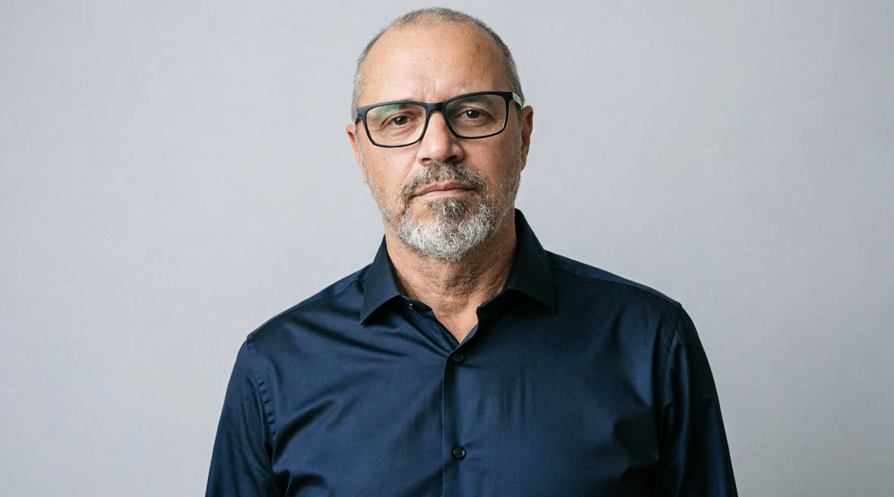

23 anos unindo técnica, estratégia e propósito
Formado em Comunicação Social – Rádio e TV pela Faculdades Oswaldo Cruz (2003). Iniciei a carreira via projeto de Comunicação Interna da Bosch Campinas, em convênio empresa-universidade. Atuei no departamento Rede Empresa da TV Cultura – braço institucional da emissora pública, prestando serviço para órgãos federais como SEBRAE-SP, Secretaria da Educação e TJOFRAN. Cobri a primeira visita presidencial de Lula à fábrica da Ford (2003) para o programa Fome Zero – transmissão via satélite quando a RádioBras não conseguia deslocar equipamentos.
Depois, passei por TVs regionais, produção educacional (EAD), campanha presidencial (Plínio Arruda Sampaio, 2010) e produção cultural (Fashion TV, programa Lado H, 3 temporadas). Voltei à TV PUC Campinas como editor e diretor de imagens, onde coordenei equipe de cinegrafistas e desenvolvi esquemas luminotécnicos. A partir de 2017, atuei como freelancer contínuo em comunicação institucional para saúde (Aristo Médica, clínica de cetamina) e cobertura na TV Câmara Campinas.
Desde 2021, sou filmmaker na Mariuzzo Mídia, atendendo contas como Bosch, UPL, Mercado Livre, Sherwin-Williams, 3M e Henkel. Em paralelo, coordeno pós-produção em escala (mais de 3.000 peças publicadas, base de 1,2 milhão de inscritos) e desenvolvo automação local com Python, Whisper e Remotion – reduzindo tempo de decupagem em 70% e garantindo conformidade total com a LGPD. Certificado em Ciência de Dados (IE University, 2026).
🎯 Disponível para oportunidades em Comunicação Interna – presencial/híbrido em Campinas/SP.